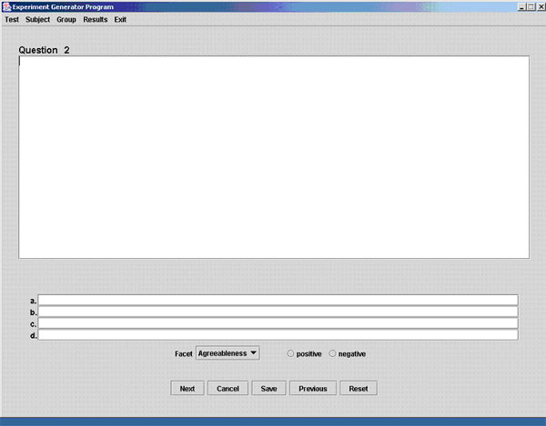

Experiment Design And Testing Program:
The Experiment-design and testing program provides a tool for creating psychology tests and experiments. The tests will be created using text format; no pictures or drawings can be used. The test context is provided by the experimenter, depending on the experimenters goal. In addition to entering the text of the questions and answers, facet(s) of a test would also be entered. The facets will be categories that a question or more belong to, making results more specific. A test must have at least one facet. Once the test questions, answers and facets are entered, the test is saved in the database and accessed by the subjects as a Java Server Page (JSP). The subjects information and their test results will also be saved in a database. The subjects results of the tests will be analyzed and an experiment conclusion will be produced using those results. The program will run on a PC with a processor of at least 1 GHz, at least 512 MB of RAM and 100 MB of hard-disk memory for installation. The mouse and the keyboard are the input devices for this program and a color monitor is used as the output device. The program also requires MySQL database and Web Server accessibility.
